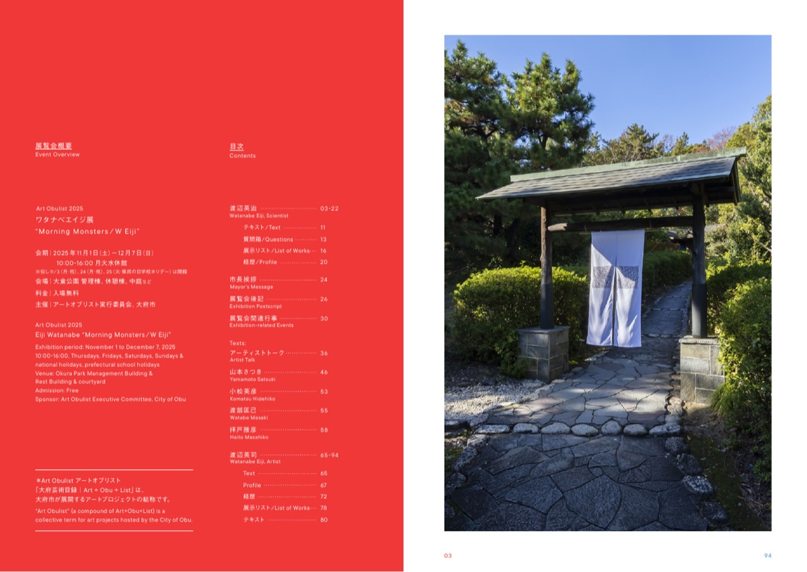
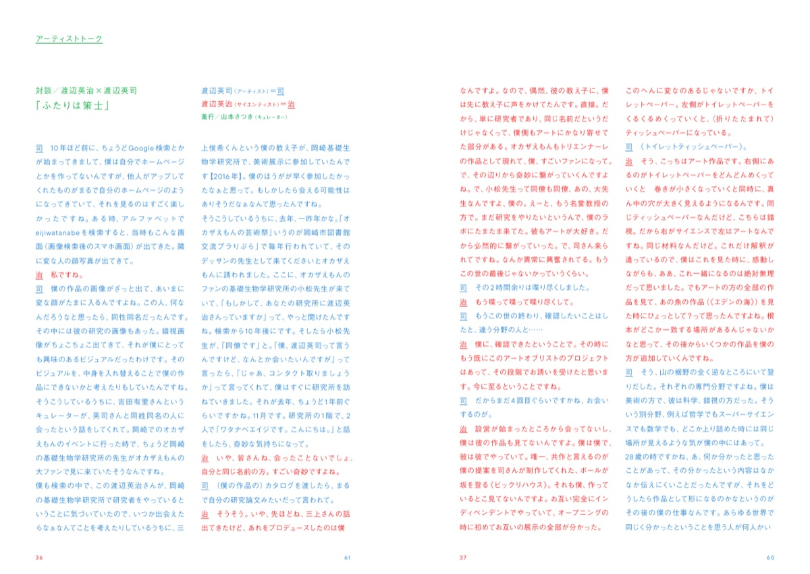
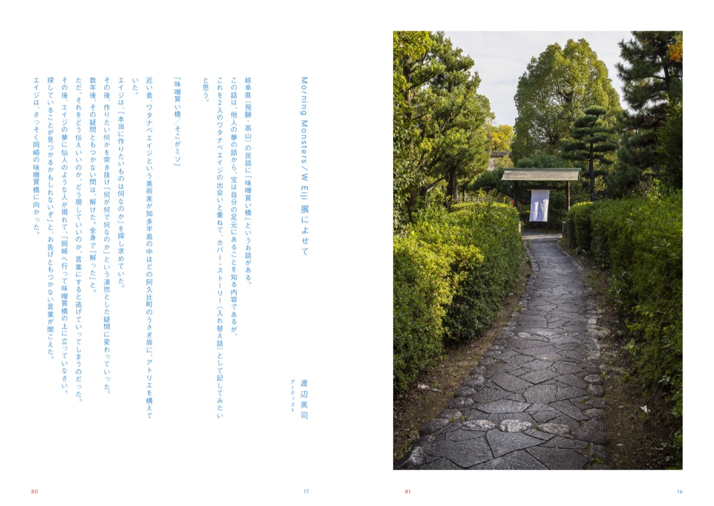
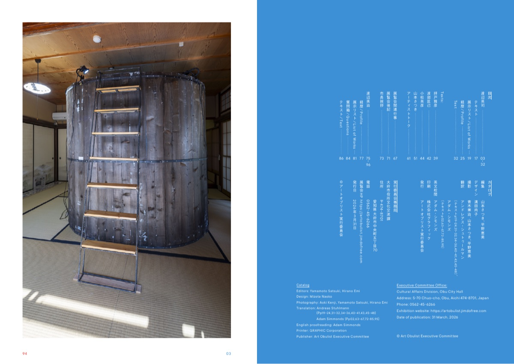

カタログCatalog
カタログ
Morning Monsters ⁄ W Eiji
Art Obulist 2025 ワタナベエイジ展「Morning Monsters / W Eiji」カタログ
寄稿と対談の抄録、作家コメントの全文を収録した、展覧会のカタログ。

書誌
- 書名
- Art Obulist 2025 ワタナベエイジ展「Morning Monsters / W Eiji」
- 発行
- アートオブリスト実行委員会、2026年3月31日
- 仕様
- A5 判 100 ページ、全文和英併記。前の表紙から渡辺英治の章、後ろの表紙から渡辺英司の章を読み、中央で出会う造本
両側から読む本A book read from both ends
前の表紙から開くと、渡辺英治（神経科学者）の章。横組みで、文字は朱赤、左ページに前から数えた朱赤のページ番号。後ろの表紙から開くと、渡辺英司（美術家）の章。縦組みで、文字は青、右ページに後ろから数えた青のページ番号。中央で二つの章が出会い、市長挨拶、後記、関連行事、謝辞、寄稿、対談が緑の文字で置かれる。どの見開きにも朱赤と青の番号があり、その和はいつも 97。
番号は英司側から数えた青の通し番号（97 − 朱赤）。範囲は両端を換算し、昇順で示した。数字と文字の色は、英司の章＝青、共有部＝緑、英治の章＝朱赤。
目次Contents
- 渡辺英司Watanabe Eiji, Artist（後ろの表紙から青の番号 03–32 で数える）03–32
- テキスト「Morning Monsters / W Eiji 展によせて」Text17
- 展示リストList of Works19
- 経歴25
- Profile（英訳）30
- Text（英訳）32
- 拝戸雅彦「英司の思い出」Contributed Article / Haito Masahiko39
- 渡部匡己「溶解する科学と芸術」Contributed Article / Watabe Masaki42
- 小松英彦「回路とコンステレーション」Contributed Article / Komatsu Hidehiko44
- 山本さつき「あたりまえの汀（みぎわ）」Critic / Yamamoto Satsuki51
- Texts: アーティストトーク「ふたりは策士」Artist Talk61
- 展覧会関連行事Exhibition-related Events67
- 展覧会後記（平野恵美）Exhibition Postscript71
- 市長挨拶「アートオブリスト2025開催に寄せて」（岡村秀人）Mayor’s Message73
- 渡辺英治Watanabe Eiji, Scientist75–94
- 経歴Profile77
- 展示リストList of Works81
- 質問箱Questions84
- テキスト「科学者と芸術家と子供の『なぜ』」Text86
寄稿Texts
- 山本さつき（キュレーター）
- 批評「あたりまえの汀（みぎわ）」Critique, “The Water’s Edge of Ordinariness in Art and Illusion”
- 渡辺英司（美術家）
- 「Morning Monsters / W Eiji 展によせて」（「味噌買い橋／そこがミソ」）“Text for the Morning Monsters W EIJI exhibition” (“Misokaibashi / What’s the miso”)
- 渡辺英治（神経科学者）
- 「科学者と芸術家と子供の『なぜ』」“A Scientist, an Artist and Children Asking ‘Why?’”
- 小松英彦（神経科学研究者）
- 「回路とコンステレーション」“Circuits and Constellations”
- 渡部匡己（物理学研究者）
- 「溶解する科学と芸術」“Dissolving Science and Art”
- 拝戸雅彦（キュレーター）
- 「英司の思い出」“Memories Of Eiji”
- 平野恵美（アートオブリスト実行委員会）
- 「展覧会後記 Morning Monsters ふたりえいじ その10年越しの邂逅」“Exhibition report: Morning Monsters – Ten Years on from the Encounter Between Two Eijis”
- 岡村秀人（大府市長）
- 「アートオブリスト2025開催に寄せて」“On the occasion of Art Obulist 2025”
奥付Colophon
- 編集
- 山本さつき、平野恵美
- デザイン
- 溝田尚子
- 撮影
- 青木兼治、山本さつき、平野恵美
- 翻訳
- アンドレアス・シュトゥールマン（テキスト p.19–24、31–32、34–36、40–41、43、45–48）、アダム・シモンズ（テキスト p.02、63–67、72–85、95）
- 英文校閲
- アダム・シモンズ
- 印刷
- 株式会社グラフィック
- 発行
- アートオブリスト実行委員会
- 事務局
- アートオブリスト実行委員会事務局（大府市役所文化交流課）
- 発行日
- 2026年3月31日
- Editors
- Satsuki Yamamoto, Emi Hirano
- Design
- Naoko Mizota
- Photography
- Kenji Aoki, Satsuki Yamamoto, Emi Hirano
- Translation
- Andreas Stuhlmann (texts pp.19–24, 31–32, 34–36, 40–41, 43, 45–48), Adam Simmonds (texts pp.02, 63–67, 72–85, 95)
- English proofreading
- Adam Simmonds
- Printing
- GRAPHIC Corporation
- Publisher
- Art Obulist Executive Committee
- Executive Committee Office
- Cultural Affairs Division, Obu City Hall
- Date of publication
- 31 March, 2026
入手方法How to get a copy
販売・配布の方法は未定です。
- 問い合わせ
- アートオブリスト実行委員会事務局（大府市役所文化交流課） 0562-45-6266
- 住所
- 〒474-8701 愛知県大府市中央町五丁目70
- Web
- artobulist.jimdofree.com
発行日は発行版PDFに基づく。印刷版との一致は未確認。
誌面Spreads



